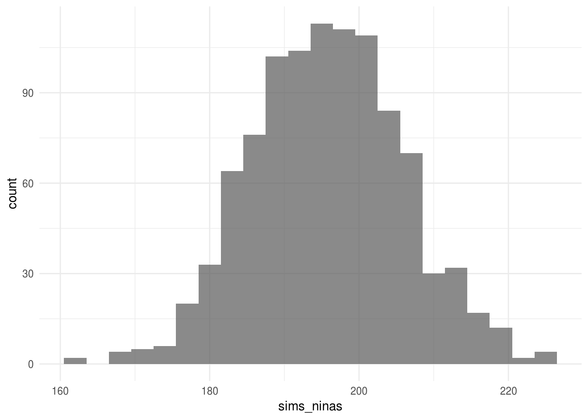
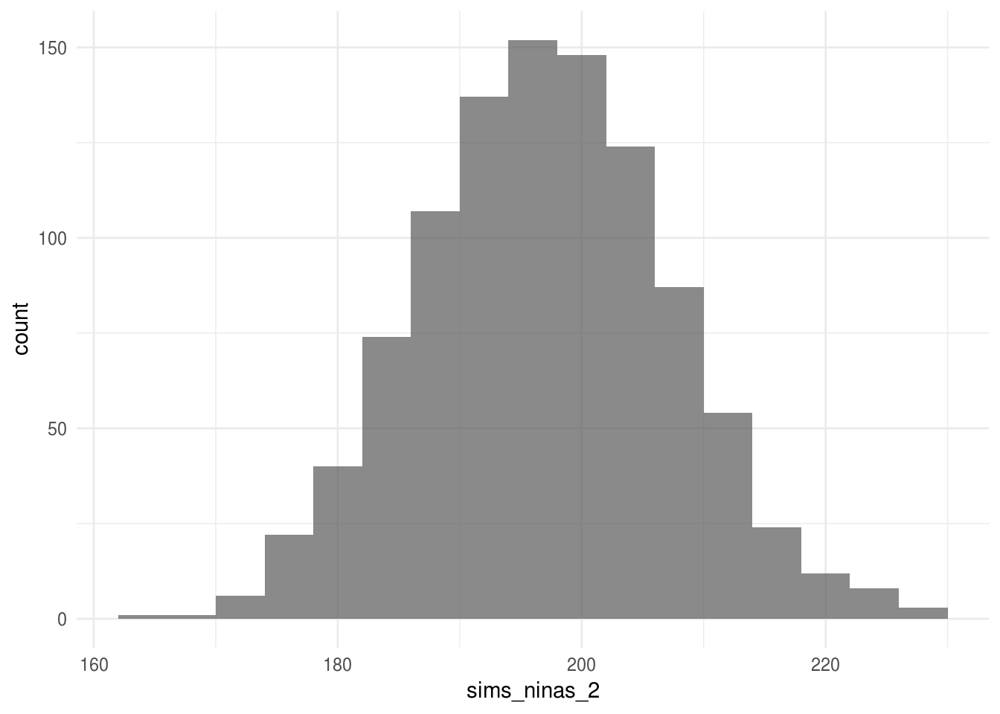
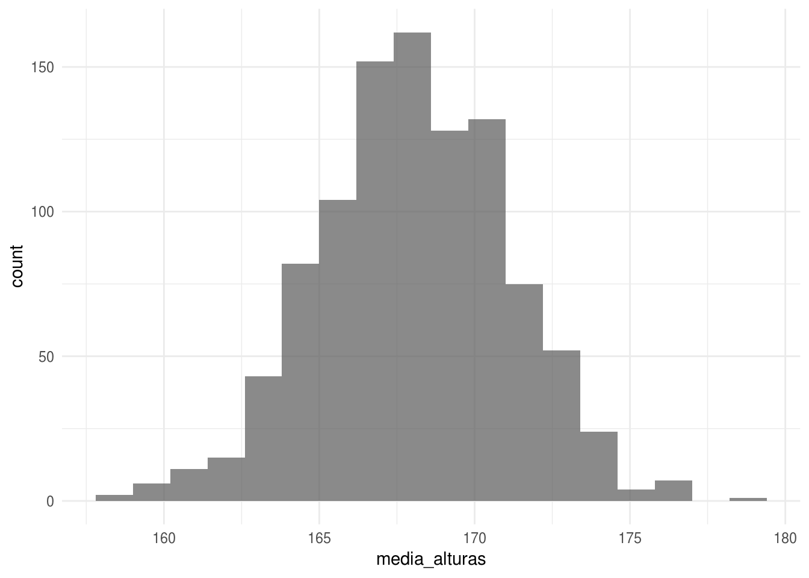
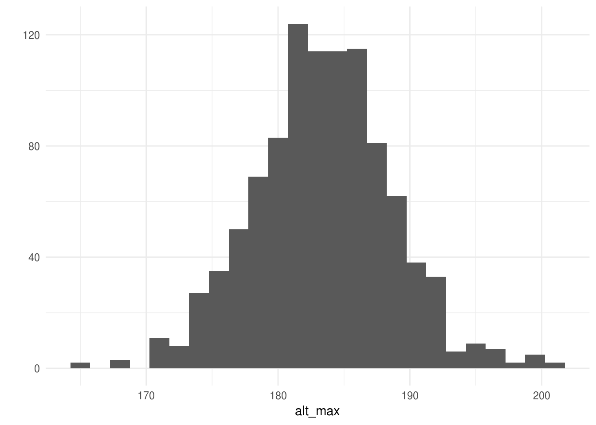
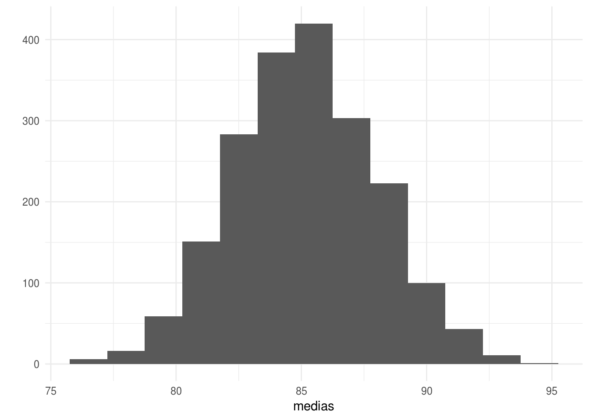
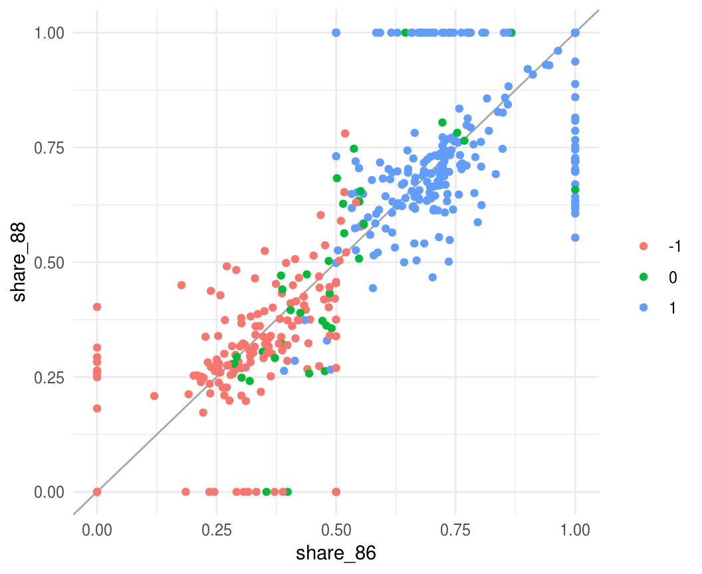
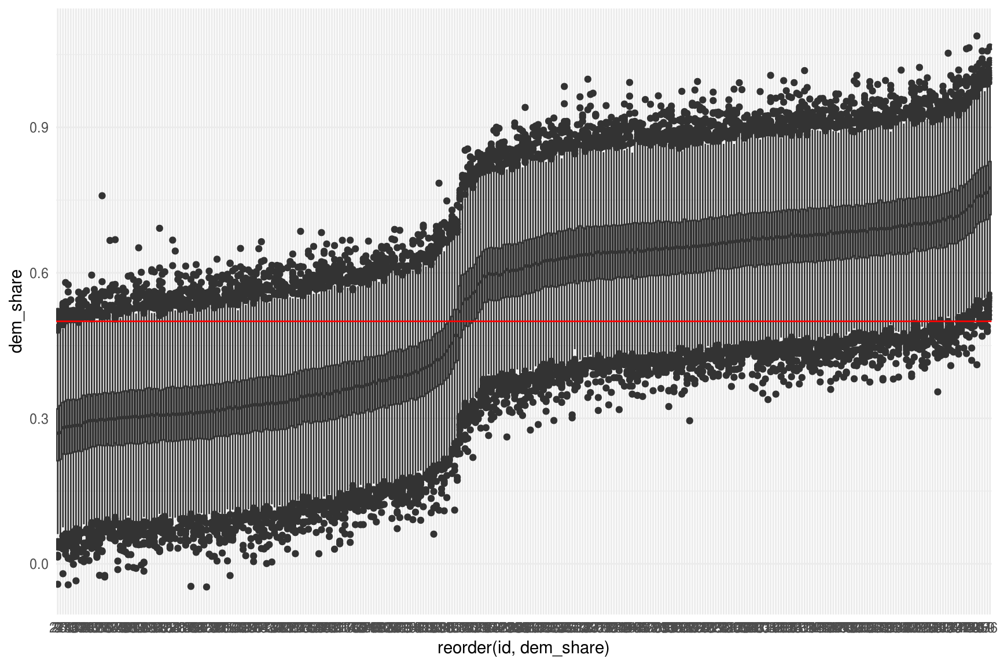

8.1 Distribuciones multivariadas
Hasta ahora hemos estudiado distribuciones univariadas y como simular de ellas, sin embargo, es común que un modelo probabilístico involucre más de una variable aleatoria por lo que estudiaremos el concepto de distribuciones de probabilidad multivariadas.
La distribución conjunta sobre un conjunto de variables aleatorias \(\{X_1,...,X_n\}\), que denotamos \(p(x_1,...,x_n)\), asigna probabilidades a todos los eventos determinados por el conjunto de variables aleatorias.
En el caso discreto bivariado, dado las variables aleatorias discretas \(X\) y \(Y\), definimos la función de densidad conjunta como \(f(x,y)=P(X=x, Y=y)\).
Ejemplo. Consideremos una distribución sobre la población de departamentos en renta de Hong Kong, el espacio de resultados es el conjunto de todos los departamentos en la población. En muchas ocasiones buscamos resolver preguntas que involucran más de una variable aleatoria, en este ejemplo nos interesan:
Renta mensual: toma los valores baja (≤1k), media ((1k,5k]), media alta ((5k,12k]) y alta (>12k).
Tipo de departamento: toma 3 valores, público, privado u otros.
La distribución conjunta de variables aleatorias discretas se puede representar por medio de tablas.
| Renta/Tipo | público | privado | otros |
|---|---|---|---|
| baja | 0.17 | 0.01 | 0.02 |
| media | 0.44 | 0.03 | 0.01 |
| media alta | 0.09 | 0.07 | 0.01 |
| alta | 0 | 0.14 | 0.10 |
En el caso continuo bivariado, decimos que la función \(p(x,y)\) es una función de densidad de probabilidad para las variables aleatorias \((X,Y)\) si: 1. \(p(x,y) \geq 0\) para toda \((x,y)\).
\(\int_{-\infty}^{\infty}p(x,y)dxdy=1\).
- Para cualquier conjunto \(A \subset \mathbb{R} \times \mathbb{R}\), \(P((X,Y) \in A) = \int\int_A p(x,y)dxdy\).
Ejemplo. Sean \((X,Y)\) uniformes en el cuadrado unitario, entonces \[ p(x,y) = \left\{ \begin{array}{lr} 1, & 0\leq x \leq 1,0\leq y \leq 1\\ 0, & e.o.c. \end{array} \right. \]
Para encontrar \(P(X < \frac{1}{2}, Y<\frac{1}{2})\), esto es la probailidad del evento \(A=\{X<1/2, Y<1/2\}\). La integral de \(p\) sobre este subconjunto corresponde, en este caso, a calcular el área del conjunto \(A\) que es igual a \(\frac{1}{4}\).
De la distribución conjunta \(p(x_1,...,x_n)\) podemos obtener la distribución de únciamente una variable aleatoria \(X_j\), donde \(X_j \in \{X_1,...,X_n\}\), la llamamos la distribución marginal de \(X_j\).
Sea \(\{X_1,...,X_n\}\) un conjunto de variables aleatorias con distribución conjunta \(p(x_1,...,x_n)\), la distribución marginal de \(X_j\) (\(j \in \{1,...,n\}\)) se define como, \[p_{X_j}(x_j) = \sum_{x_1,...,x_{j-1},x_{j+1},...,x_n}p(x_1,...,x_n)\mbox{ en el caso discreto,}\] \[p_{X_j}(x_j) = \int_{x_1,...,x_{j-1},x_{j+1},...,x_n}p(x_1,...,x_n)dx_1,...,dx_n\mbox{ en el caso continuo}\]
Ejemplo. Retomando el problema de los departamentos, ¿Cuál es la probabilidad de que un departamento elegido al azar tenga renta baja?
Probabilidad condicional
Sean \(A\), \(B\) dos eventos, con \(P(B)>0\), la probabilidad condicional de \(A\) dado \(B\) es
\[P(A|B)=\frac{P(AB)}{P(B)}\]
Ejemplo. ¿Cuál es la probabilidad de que un departamento privado tenga renta baja? ¿Cómo se compara con la probabilidad de que la renta sea baja (desconozco el tipo de departamento)?
La noción de probabilidad condicional se extiende a distribuciones condicionales:
Sean \(X\), \(Y\) dos variables aleatorias con función de densidad conjunta \(p(x,y)\), entonces la función de densidad condicional de \(X\) dado \(Y=y\), para toda \(y\) tal que \(p_Y(y) > 0\), se define como \[p_{X\vert Y}(x\vert y) = \frac{p(x, y)}{p_Y(y).}\]
Ejemplo. ¿Cuál es la distribución condicional de renta dado tipo
privado ? Para obtener toda la distribución condicional calculamos los dos casos
restantes (renta media, media alta y alta).
Vale la pena destacar que una distribución condicional es una distribución de probabilidad. En el ejemplo anterior, notemos que cada renglón de la tabla probabilidades suman uno, son no negativas y menores que uno.
Probabilidad Total
Sean \(E\), \(F\) dos eventos entonces, \[P(E) = P(E\vert F)P(F) + P(E\vert F^c)P(F^c).\] De manera más general, sean \(F_i\) \(i = 1,...,n\) eventos mutuamente excluyentes cuya unión es el espacio muestral, entonces \[P(E) = \sum_{i=1}^n P(E\vert F_i)P(F_i).\]
Ejemplo. Supongamos que una aseguradora clasifica a la gente en tres grupos de acuerdo a su nivel de riesgo: bajo, medio y alto. De acuerdo a los registros, las probabilidades de incurrir en un accidente en un laspo de un año son 0.05, 0.15 y 0.30 respectivamente. Si el 20% de la población se clasifica en riesgo bajo, 50% en medio y 30% en alto, ¿qué proporción de la población tiene un accidente en un año dado?
Para variables aleatorias tenemos:
Sean \(X\), \(Y\) dos variables aleatorias, podemos expresar la distribución marginal de \(X\) como: \[p_X(x) = \sum_{y} p_{X \vert Y}(x\vert y)p_Y(y).\]
 Supongamos que ruedo un dado, si observo un número
par lanzo una moneda justa
(la probabilidad de observar águila es la misma que la de observar sol), si el
dado muestra un número impar lanzo una moneda sesgada en la que la probabilidad
de observar águila es 0.9. Si observo sol, ¿Cuál es la probabilidad de que haya
lanzado la moneda sesgada?
Supongamos que ruedo un dado, si observo un número
par lanzo una moneda justa
(la probabilidad de observar águila es la misma que la de observar sol), si el
dado muestra un número impar lanzo una moneda sesgada en la que la probabilidad
de observar águila es 0.9. Si observo sol, ¿Cuál es la probabilidad de que haya
lanzado la moneda sesgada?
El ejercicio anterior introduce la noción de probabilidad inversa: inicialmente conozco la probabilidad de observar sol condicional a que la moneda es sesgada pero ahora me interesa conocer la probabilidad de que haya lanzado una moneda sesgada una vez que observé un sol en el volado.
Regla de Bayes
La regla de Bayes es una consecuencia de la definición de probabilidad condicional.
Sean \(F_i\) \(i = 1,...,n\) eventos mutuamente excluyentes cuya unión es el espacio muestral, entonces \[P(F_j\vert E) = \frac{P(E\vert F_j)P(F_j)}{\sum_{i=1}^n P(E\vert F_i)P(F_i)}\] esta identidad se conoce como la regla de Bayes.
Ejemplo. En el contexto del ejemplo de los seguros ahora nos hacemos la siguiente pregunta: si un asegurado tuvo accidentes en 2013, ¿cuál es la probabilidad de que clasifique en riesgo bajo?
La intuición es engañosa:
En estudios en Alemania y EUA, investigadores
le pidieron a médicos que estimaran la probabilidad de que una mujer
asintomática entre los 40 y 50 años tuviera cáncer de mama si su mamograma
era positivo. Se les explicó que el 7% de los mamogramas indican cáncer cuando
no lo hay (falsos positivos). Adicional mente, se le explicó a los médicos que
la incidencia de cáncer de mama en ese grupo de edad es 0.8% y la tasa de
falsos negativos de 10%. En Alemania, un tercio de los médicos determinaron
que la probabilidad era cercana al 90% y la mediana de las estimaciones fue
70%. En EUA 95 de 100 médicos estimaron que la probabilidad rondaba el 75%.
¿Cómo determinas la probabilidad de que una mujer con mamograma positivo tenga
cáncer?
Al igual que con probabilidad condicional, la Regla de Bayes tiene una definición análoga para variables aleatorias.
Sean \(X\), \(Y\) dos variables aleatorias, \[p_{X\vert Y}(x\vert y) = \frac{p_{Y\vert X}(y\vert x)p_X(x)}{p_Y(y)}.\]
Supongamos ahora que una compañía de
seguros divide a la gente en dos clases: propensos a accidente (30% de las
personas) y no propensos a accidente. En un año dado aquellos propensos a
accidentes sufren un accidente con probabilidad 0.4, mientras que los del otro
grupo sufren un accidente con probabilidad 0.2. ¿Cuál es la probabilidad de que
un asegurado tenga un accidente en su segundo año condicional a que sufrió un
accidente en el primer año?
Una consecuencia de la regla de Bayes es que cualquier distribución multivariada sobre \(n\) variables \(X_1,X_2,...X_n\) se puede expresar como:
\[p(x_1,x_2,...x_n) = p_{X_1}(x_1)p_{X_2\vert X_1}(x_2\vert x_1)p_{X_3\vert X_1X_2}(x_3\vert x_1x_2)···p_{X_n\vert X_1...X_{n-1}}(x_n\vert x_1...x_{n-1})\] esta igualdad se conoce como regla de la cadena.
Nótese que esta regla funciona para cualquier ordenamiento de las variables aleatorias.
8.1.1 Independencia
Los eventos \(E\), \(F\) son independientes sí y solo sí \[P(EF) = P(E)P(F)\]
De la definición de independencia se sigue que \(P(E\vert F) = P(E)\). Esto es, los eventos \(E\) y \(F\) son independientes si saber que uno de ellos ocurrió no afecta la probabilidad del otro. Utilizaremos la notación \(E\perp F\) que se lee “\(E\) es independiente de \(F\)”.
Dos variables aleatorias \(X\), \(Y\), son independientes sí y sólo sí \[p(x,y) = p_X(x)p_Y(y)\]
Más aún, \(X\) y \(Y\) son independientes sí y sólo sí \(p(x,y) \propto g(x)h(y)\), por lo que para demostrar independecia podemos omitir las constantes en la factorización de las densidades
Similar a la independencia en eventos, la independencia de variables aleatorias implica que \(p_{X\vert Y}(x\vert y) = p_X(x)\), esto es, \(Y = y\) no provee información sobre \(X\).
Ejemplo. Consideremos la función de densidad conjunta \(p(x,y) = \frac{1}{384} x^2y^4e^{-y-(x/2)}\), \(x>0\), \(y>0\), ¿\(X\) y \(Y\) son independientes?
Podemos definir \[ g(x) = \left\{ \begin{array}{lr} x^2e^{-x/2} & : x > 0\\ 0 & : x \le 0 \end{array} \right. \] y \[ h(y) = \left\{ \begin{array}{lr} y^4e^{-y} & : y > 0\\ 0 & : y \le 0 \end{array} \right. \] entonces \(p(x,y) \propto g(x)h(y)\), para toda \(x\), \(y\) \(\in \mathbb{R}\) y concluímos que \(X\) y \(Y\) son independientes.
**Ejemplo.*. Si la densidad conjunta de \(X\) y \(Y\) está dada por: \[ p(x, y) = \left\{ \begin{array}{lr} 2 & : 0 < x < y, 0 < y < 1\\ 0 & : e.o.c. \end{array} \right. \]
¿\(X\) y \(Y\) son independientes?
Ejercicio. Recordando el ejemplo de departamentos en Hong Kong, veamos si Renta y Tipo son independientes, para esto comparemos \(p(renta|tipo)\) y \(p(renta)\).
8.1.1.1 Independencia condicional
La independencia de eventos o variables aleatorias es poco común en la práctica, más frecuente es el caso en que dos eventos son independientes dado un tercer evento.
Ejemplo. En una competencia de velocidad, cada atleta se somete a dos pruebas de dopaje que buscan detectar si el deportista ingirió una substania prohibida. La prueba A consiste en un examen de sangre y la prueba B en un exámen de orina, cada prueba se realiza en un laboratorio distinto y no hay intercambio de información entre los laboratorios. Es razonable pensar que los resultados de los dos exámenes no son independientes. Ahora, supongamos que sabemos que el atleta consumió la substancia prohibida, en este caso podemos argumentar que conocer el resultado de la prueba A no cambia la probabilidad de que el atleta salga positivo en la prueba B. Decimos que el resultado de la prueba B es condicionalmente independiente del resultado de la prueba A dado que el atleta consumió la substancia.
Sean \(A\), \(B\) y \(C\), tres eventos decimos que \(A\) es independiente de \(B\) condicional a \(C\) (\(A \perp B \vert C\)) si, \[ P(A,B\vert C) = P(A\vert C)P(B\vert C)\]
Similar al caso de independencia, \(A\) y \(B\) son condicionalmente independientes dado \(C\) sí y solo sí \(P(A \vert B,C) = P(A \vert C)\), esto es, una vez que conocemos el valor de \(C\), \(B\) no proporciona información adicional sobre \(A\).
Ejemplo. Retomemos el ejercicio de asegurados. En la solución de este ejercicio utilizamos que \(P(A_2|AA_1) = 0.4\) y que \(P(A_2|A^cA_1) = 0.2\), al establecer esa igualdad estamos asumiendo que \(A_2\) (el asegurado tiene un accidente en el año 2) y \(A_1\) (el asegurado tiene un accidente en el año 1) son eventos condicionalmente independientes dado \(A\) (el asegurado es propenso a accidentes): \(P(A_2|AA_1) = P(A_2|A) = 0.4\) y \(P(A_2|A^cA_1) = P(A_2|A^c) = 0.2\).
Ejemplo. Retomemos el ejercicio de asegurados. En la solución de este ejercicio utilizamos que \(P(A_2|AA_1) = 0.4\) y que \(P(A_2|A^cA_1) = 0.2\), al establecer esa igualdad estamos asumiendo que \(A_2\) (el asegurado tiene un accidente en el año 2) y \(A_1\) (el asegurado tiene un accidente en el año 1) son eventos condicionalmente independientes dado \(A\) (el asegurado es propenso a accidentes): \(P(A_2|AA_1) = P(A_2|A) = 0.4\) y \(P(A_2|A^cA_1) = P(A_2|A^c) = 0.2\).
En el caso de variables aleatorias definimos independencia condicional como sigue.
Sean \(X\), \(Y\) y \(Z\), tres variables aleatorias decimos que \(X\) es independiente de \(Y\) condicional a \(Z\) (\(X \perp Y \vert Z\)) si y sólo sí, \[p(x,y\vert z) = p_{X\vert Z}(x\vert z)p_{Y\vert Z}(y\vert z).\]
Y tenemos que \(X\) es independiente de \(Y\) condicional a \(Z\) sí y sólo sí, \(p(x,y,z) \propto g(x,z)h(y,z)\).
Ejemplo. Supongamos que ruedo un dado, si observo un número par realizo dos lanzamientos de una moneda justa (la probabilidad de observar águila es la misma que la de observar sol), si el dado muestra un número impar realizo dos lanzamientos de una moneda sesgada en la que la probabilidad de observar águila es 0.9. Denotemos por \(Z\) la variable aleatoria asociada a la selección de la moneda, \(X_1\) la correspondiente al primer lanzamiento y \(X_2\) la correspondiente al segundo. Entonces, \(X_1\) y \(X_2\) no son independientes, sin embargo, son condicionalmente independientes (\(X_1 \perp X_2 \vert Z\)), puesto que una vez que se que moneda voy a lanzar el resultado del primer lanzamiento no aporta información adicional para el segundo lanzamiento. Calcularemos la distribución conjunta y la distribución condicional de \(X_2\) dado \(X_1\).
La distribución conjunta esta determinada por la siguiente tabla:
| Z | X1 | X2 | P(Z,X1,X2) |
|---|---|---|---|
| justa | a | a | 0.125 |
| justa | a | s | 0.125 |
| justa | s | a | 0.125 |
| justa | s | s | 0.125 |
| ses | a | a | 0.405 |
| ses | a | s | 0.045 |
| ses | s | a | 0.045 |
| ses | s | s | 0.005 |
La distribución condicional \(p(X_2|X_1)\) es,
| X1/X2 | a | s | . |
|---|---|---|---|
| a | 0.757 | 0.243 | 1 |
| s | 0.567 | 0.433 | 1 |
y la distribución condicional \(p(X_2|X_1,Z)=p(X_2|Z)\) es,
| X1/X2 | Z | a | s | . |
|---|---|---|---|---|
| a | par | 0.5 | 0.5 | 1 |
| s | par | 0.5 | 0.5 | 1 |
| a | impar | 0.9 | 0.1 | 1 |
| s | impar | 0.9 | 0.1 | 1 |
En este punto es claro que \(X \perp Y \vert Z\) no implica \(X \perp Y\), pues como vimos en el ejemplo de las monedas \(X_1 \perp X_2 \vert Z\) pero \(X_1 \not \perp X_2\). Más aún, \(X \perp Y\) tampoco implica \(X \perp Y \vert Z\).
La independencia condicional tiene importantes consecuencias, por ejemplo, si \(X\) es independiente de \(Y\) dado \(Z\) entonces, \[p(x,y,z) = p_Z(z)p_{X\vert Z}(x\vert z)p_{Y\vert Z}(y\vert z).\]
Esta expresión de la densidad conjunta es similar a la que obtendríamos usando la regla de la cadena; sin embargo, el número de parámetros necesarios bajo esta representación es menor lo que facilita la estimación.
8.1.2 Modelos gráficos y simulación predictiva
El objetivo de esta sección es la simulación de modelos, una manera conveniente de simular de un modelo probabilístico es a partir del modelo gráfico asociado. Un modelo gráfico representa todas las cantidades involucradas en el modelo mediante nodos de una gráfica dirigida, el modelo representa el supuesto que dados los nodos padres \(padres(v)\) cada nodo es independiente del resto de los nodos a excepción de sus descendientes.
Los nodos en las gráficas se clasifican en 3 tipos:
Constantes fijas por el diseño del estudio, siempre son nodos sin padres.
Estocásticos son variables a los que se les asigna una distribución.
Determinísticos son funciones lógicas de otros nodos.
Los supuestos de independencia condicional que representa la gráfica implican que la distribución conjunta de todas las cantidades V tiene una factorización en términos de la distribución condicional \(p(v|padres(v))\) de tal manera que: \[p(V) = \prod p(v|padres(v))\]
Veamos como usar las gráficas para simular de modelos probabilísticos. Los siguientes ejemplos están escritos con base en (???).
Ejemplo de simulación discreta predictiva
La probabilidad de que un bebé sea niña o niño es 48.8% y 51.2% respectivamente. Supongamos que hay 400 nacimientos en un hospital en un año dado. ¿Cuántas niñas nacerán?
Comencemos viendo el modelo gráfico asociado.

La gráfica superior muestra todas las variables relevantes en el problema, y las dependencias entre ellas. En este caso \(n\) es una constante que representa el número de nacimientos, (\(n=400\)), \(p=48.8\) es la probabilidad de que un nacimiento resulte en niña y \(k \sim Binomial(p, n)\). Debido a que el número de éxitos (nacimientos que resultan en niña) depende de la tasa p y el número de experimentos n, los nodos que representan a éstas dos últimas variables están dirigidos al nodo que representa k.
Una vez que tenemos la gráfica es fácil simular del modelo:
library(ggplot2)
library(dplyr)
library(arm)
#> Error in library(arm): there is no package called 'arm'
library(tidyr)
set.seed(918739837)
n_ninas <- rbinom(1, 400, 0.488)esto nos muestra algo que podría ocurrir en 400 nacimientos. Ahora, para tener una noción de la distribución simulamos el proceso 1000 veces:
sims_ninas <- rerun(1000, rbinom(1, 400, 0.488)) %>% flatten_dbl()
mean(sims_ninas)
#> [1] 196
sd(sims_ninas)
#> [1] 10.1
ggplot() + geom_histogram(aes(x = sims_ninas), binwidth = 3, alpha = 0.7)
El histograma de arriba representa la distribución de probabilidad para el número de niñas y refleja la incertidumbre en los nacimientos.
Podemos agregar complejidad al modelo, por ejemplo con probabilidad 1/125 un nacimiento resulta en gemelos fraternales, y para cada uno de los bebés hay una posibilidad de aproximadamente 49.5% de ser niña. Además la probabilidad de gemelos idénticos es de 1/300 y estos a su vez resultan en niñas en aproximadamente 40.5% de los casos.

Podemos simular 400 nacimientos bajo este modelo como sigue:
tipo_nacimiento <- sample(c("unico", "fraternal", "identicos"),
size = 400, replace = TRUE, prob = c(1 - 1 / 125 - 1 / 300, 1 / 125, 1 / 300))
n_unico <- sum(tipo_nacimiento == "unico") # número de nacimientos únicos
n_fraternal <- sum(tipo_nacimiento == "fraternal")
n_identicos <- 400 - n_unico - n_fraternal
n_ninas <- rbinom(1, n_unico, 0.488) +
rbinom(1, 2 * n_fraternal, 0.495) + # en cada nacimiento hay 2 bebés
2 * rbinom(1, n_identicos, 0.405)
n_ninas
#> [1] 183Repetimos la simulación 1000 veces para aproximar la distribución de número de niñas en 400 nacimientos.
modelo2 <- function(){
tipo_nacimiento <- sample(c("unico", "fraternal", "identicos"),
size = 400, replace = TRUE, prob = c(1 - 1 / 125 - 1 / 300, 1 / 125, 1 / 300))
# número de nacimientos de cada tipo
n_unico <- sum(tipo_nacimiento == "unico") # número de nacimientos únicos
n_fraternal <- sum(tipo_nacimiento == "fraternal")
n_identicos <- 400 - n_unico - n_fraternal
# simulamos para cada tipo de nacimiento
n_ninas <- rbinom(1, n_unico, 0.488) +
rbinom(1, 2 * n_fraternal, 0.495) + # en cada nacimiento hay 2 bebés
2 * rbinom(1, n_identicos, 0.405)
n_ninas
}
sims_ninas_2 <- rerun(1000, modelo2()) %>% flatten_dbl()
mean(sims_ninas_2)
#> [1] 198
sd(sims_ninas_2)
#> [1] 10.2
ggplot() + geom_histogram(aes(x = sims_ninas_2), binwidth = 4, alpha = 0.7)
8.1.2.1 Ejemplo de simulación continua predictiva
El 52% de los adultos en EUA son mujeres y el 48% hombres, las estaturas de los hombres se distribuyen aproximadamente normal con media 175 cm y desviación estándar de 7.37 cm, en el caso de las mujeres la distribución es aproximadamente normal con media 161.80 cm y desviación estándar de 6.86 cm. Supongamos que seleccionamos 10 adultos al azar, ¿cuál es el modelo gráfico asociado? ¿qué podemos decir del promedio de estatura?
sexo <- rbinom(10, 1, 0.52)
altura <- rnorm(sexo, mean = 161.8 * (sexo == 1) + 175 * (sexo == 0),
sd = 6.86 * (sexo == 1) + 7.37 * (sexo == 0))
mean(altura)
#> [1] 172Simulamos la distribución de la altura promedio:
mediaAltura <- function(){
sexo <- rbinom(10, 1, 0.52)
altura <- rnorm(sexo, mean = 161.8 * (sexo == 1) + 175 * (sexo == 0),
sd = 6.86 * (sexo == 1) + 7.37 * (sexo == 0))
}
sims_alturas <- rerun(1000, mediaAltura())
media_alturas <- sims_alturas %>% map_dbl(mean)
mean(media_alturas)
#> [1] 168
sd(media_alturas)
#> [1] 3.05
ggplot() + geom_histogram(aes(x = media_alturas), binwidth = 1.2, alpha = 0.7)
¿Y que podemos decir de la altura máxima?
alt_max <- sims_alturas %>% map_dbl(max)
qplot(alt_max, geom = "histogram", binwidth = 1.5)
Supongamos que una compañía cambia la tecnología
usada para producir una cámara, un estudio estima que el ahorro en la producción
es de $5 por unidad con un error estándar de $4. Más aún, una proyección
estima que el tamaño del mercado (esto es, el número de cámaras que se venderá)
es de 40,000 con un error estándar de 10,000. Suponiendo que las dos fuentes de
incertidumbre son independientes, usa simulación de variables aleatorias
normales para estimar el total de dinero que ahorrará la compañía, calcula un
intervalo de confianza.
8.1.2.2 Ejemplo de simulación de un modelo de regresión
En regresión utilizamos simulación para capturar tanto la incertidumbre en la predicción (término de error en el modelo) como la incertidumbre en la inferencia (errores estándar de los coeficientes e incertidumbre del error residual).
Comenzamos con un ejemplo en el que simulamos únicamente incertidumbre en la predicción.
Supongamos que el puntaje de un niño de tres años en una prueba cognitiva esta relacionado con las características de la madre, el siguiente modelo resume la diferencia en los puntajes promedio de los niños cuyas madres se graduaron de preparatoria y los que no.
\[y_i= \beta_0 + \beta_1 X_{i1} + \epsilon_i\]
- donde \(y_i\) es el puntaje del i-ésimo niño,
- \(X_{i1}\) es una variable binaria que indica si la madre se graduó de preparatoria (codificado como 1) o no (codificado como 0), y
- \(\epsilon_i\) son los error aleatorios, estos son independientes con distribución normal \(\epsilon_i \sim N(0, \sigma^2)\).
Ahora consideremos el problema de simular el puntaje de 50 niños 30 con madres que terminaron la preparatoria y 20 cuyas madres no terminaron. Los coeficientes que usaremos son:
\[\beta_0 = 78\] \[\beta_1 = 12\] \[\sigma = 20\]
El modelo gráfico asociado sería como sigue:

vector_mu <- c(rep(78 + 12, 30), rep(78, 20)) # beta_0 + beta_1 X
y <- rnorm(50, vector_mu, 20)
sims_y <- rerun(2000, rnorm(50, vector_mu, 20))Podemos calcular la media y su intervalo de confianza:
medias <- sims_y %>% map_dbl(mean)
quantile(medias, c(0.025, 0.975))
#> 2.5% 97.5%
#> 79.7 90.8
qplot(medias, geom = "histogram", binwidth = 1.5)
Supongamos ahora que nos interesa incorporar que tenemos incertidumbre en los coeficientes de regresión, y expresamos nuestra incertidumbre a través de distribuciones de probabilidad, ¿cómo sería el modelo gráfico asociado?
Primero suponemos que \(\sigma^2\) tiene una distribución centrada en 202, proporcional a una distribución \(\chi^2\) con 432 grados de libertad.
\[ \begin{eqnarray*} \begin{pmatrix}\beta_{0}\\ \beta_{1} \end{pmatrix} & \sim & N\left[\left(\begin{array}{c} 77\\ 12 \end{array}\right), \sigma^2 \left(\begin{array}{cc} 0.01 & -0.01\\ -0.01 & 0.01 \end{array}\right)\right] \end{eqnarray*} \]
Finalmente, simulamos del modelo incorporando tanto la incertidumbre correpondiente a la predicción como la incertidumbre en los coeficientes de regresión.
Simula \(\sigma=20\sqrt{(432)/X}\) donde \(X\) es una generación de una distribución \(\chi^2\) con \(432\) grados de libertad.
Dado \(\sigma\) (obtenido del paso anterior), simula \(\beta\) de una distribución normal multivariada con media \((77,12)\) y matriz de covarianzas \(\sigma^2 V\).
Simula \(y\) el vector de observaciones usando los parámetros de 1 y 2.
simula_parametros <- function(){
# empezamos simulando sigma
sigma <- 20 * sqrt((432) / rchisq(1, 432))
# la usamos para simular betas
beta <- MASS::mvrnorm(1, mu = c(78, 12),
# Sigma = sigma ^ 2 * matrix(c(4.2, -4.2, -4.2, 5.4), nrow = 2))
Sigma = sigma ^ 2 * matrix(c(0.011, -0.011, -0.011, 0.013), nrow = 2))
# Simulamos parámetros
list(sigma = sigma, beta = beta)
}
sims_parametros <- rerun(10000, simula_parametros())
# simulamos los puntajes
simula_puntajes <- function(beta, sigma, n_hs = 30, n_nhs = 20){
vector_mu <- c(rep(beta[1] + beta[2], n_hs), rep(beta[1], n_nhs)) # beta_0 + beta_1 X
obs = rnorm(50, vector_mu, sigma)
}
sims_puntajes <- map(sims_parametros, ~simula_puntajes(beta = .[["beta"]], sigma = .[["sigma"]]))
medias_incert <- sims_puntajes %>% map_dbl(mean)
quantile(medias_incert, c(0.025, 0.975))
#> 2.5% 97.5%
#> 79.2 90.9
qplot(medias_incert, geom = "histogram", binwidth = 1)
Los parametros se obtuvieron de ajustar el modelo de regresión lineal.
library(foreign)
kids_iq <- read.dta("data/kidiq.dta")
lm_kid <- lm(kid_score ~ mom_hs, kids_iq)
V <- vcov(lm_kid) / 20 ^ 2
summary(lm_kid)
#>
#> Call:
#> lm(formula = kid_score ~ mom_hs, data = kids_iq)
#>
#> Residuals:
#> Min 1Q Median 3Q Max
#> -57.55 -13.32 2.68 14.68 58.45
#>
#> Coefficients:
#> Estimate Std. Error t value Pr(>|t|)
#> (Intercept) 77.55 2.06 37.67 <2e-16 ***
#> mom_hs 11.77 2.32 5.07 6e-07 ***
#> ---
#> Signif. codes: 0 '***' 0.001 '**' 0.01 '*' 0.05 '.' 0.1 ' ' 1
#>
#> Residual standard error: 19.9 on 432 degrees of freedom
#> Multiple R-squared: 0.0561, Adjusted R-squared: 0.0539
#> F-statistic: 25.7 on 1 and 432 DF, p-value: 5.96e-07Podemos usar simulación para calcular intervalos de confianza para \(\beta_0\) y \(\beta_1\),
sims_parametros %>% map_dbl(~(.$beta[1])) %>% sd()
#> [1] 2.11
sims_parametros %>% map_dbl(~(.$beta[2])) %>% sd()
#> [1] 2.3No parece que valga la pena el esfuerzo cuando podemos calcular los intervalos analíticamente, sin embargo con simulación podemos responder fácilmente otras preguntas, por ejemplo, la pregunta inicial: ¿cuál es la media esperada para un conjunto de 50 niños, 30 con madres que hicieron preparatoria y 20 que no? es fácil de responder con simulación.
Podríamos usar predict() para calcular el estimador puntual de la media en el
examen para los niños:
pred_mi_pob <- predict(lm_kid, newdata = data.frame(mom_hs = c(rep(1, 30),
rep(0, 20))), se.fit = TRUE)
mean(pred_mi_pob$fit)
#> [1] 84.6¿Cómo calculas el error estándar? En este caso se puede resolver pues es una combinación lineal de los coeficientes del modelo, pero en muchos casos nuestro objetivo es más complicado que coeficientes o combinaciones lineales de estos.
8.1.2.3 Simulación de predicciones no lineales
Veamos un ejemplo de las elecciones en el congreso de EUA. Tenemos un modelo que usaremos para predecir la elección de 1990 basados en la de 1988.
Explicación del problema. EUA está dividido en 435 distritos congresionales, definimos la variable de interés \(y_i\) con \(i=1,...,n\), como la participación del partido Demócrata en el distrito \(i\) en \(1988\). La participación se calcula como el porcentaje de los votos correspondientes a los demócratas del total de votos que recibieron los demócratas y republicanos, esto es, se excluyen los votos a otros partidos.
El modelo del que simularemos se construyó usando datos de 1986 y 1988.
# Los datos están almacenados en 3 archivos correspondientes al año
paths <- dir("data/congress", full.names = TRUE)
paths <- set_names(paths, basename(paths))
# Leemos los datos y recodificamos variables
congress <- map_dfr(paths, read.table, quote = "\"",
stringsAsFactors = FALSE, .id = "year") %>%
mutate(id = rep(1:435, 3),
year = parse_number(year), # año de la elección
incumbency = ifelse(V3 == -9, NA, V3), # codificar NAs
dem_share = V4 / (V4 + V5)) %>% # participación demócrata
dplyr::select(id, year, incumbency, dem_share)
glimpse(congress)
#> Observations: 1,305
#> Variables: 4
#> $ id <int> 1, 2, 3, 4, 5, 6, 7, 8, 9, 10, 11, 12, 13, 14, 15, ...
#> $ year <dbl> 1986, 1986, 1986, 1986, 1986, 1986, 1986, 1986, 198...
#> $ incumbency <int> 1, 1, 1, -1, 1, -1, 0, -1, -1, 1, 1, 1, 1, 1, 1, 0,...
#> $ dem_share <dbl> 0.745, 0.674, 0.696, 0.465, 0.391, 0.358, 0.549, 0....
# datos en forma horizontal
congress_share <- spread(dplyr::select(congress, -incumbency), year, dem_share)
colnames(congress_share) <- c("id", "share_86", "share_88", "share_90")
congress_inc <- spread(dplyr::select(congress, -dem_share), year, incumbency)
colnames(congress_inc) <- c("id", "inc_86", "inc_88", "inc_90")
# quitamos NAs
congress_h <- na.omit(left_join(congress_share, congress_inc))
#> Joining, by = "id"
glimpse(congress_h)
#> Observations: 431
#> Variables: 7
#> $ id <int> 1, 2, 3, 4, 5, 6, 7, 8, 9, 10, 11, 12, 13, 14, 15, 16...
#> $ share_86 <dbl> 0.745, 0.674, 0.696, 0.465, 0.391, 0.358, 0.549, 0.22...
#> $ share_88 <dbl> 0.772, 0.636, 0.665, 0.274, 0.264, 0.334, 0.632, 0.33...
#> $ share_90 <dbl> 0.714, 0.597, 0.521, 0.234, 0.477, 0.256, 0.602, 0.49...
#> $ inc_86 <int> 1, 1, 1, -1, 1, -1, 0, -1, -1, 1, 1, 1, 1, 1, 1, 0, 1...
#> $ inc_88 <int> 1, 1, 1, -1, -1, -1, 1, -1, -1, 1, 1, 1, 1, 1, 1, 1, ...
#> $ inc_90 <int> 1, 1, 0, -1, 0, -1, 0, -1, -1, 1, 1, 1, 1, 1, 1, 1, 1...
ggplot(congress_h, aes(x = share_86, y = share_88, color = factor(inc_86))) +
geom_abline(color = "darkgray") +
geom_point() +
labs(color = "")
# quitamos las elecciones que no se compitieron
congress_h <- filter(congress_h, share_88 != 1 & share_88 != 0)
fit_88 <- lm(share_88 ~ share_86 + inc_88, data = congress_h)
summary(fit_88)
#>
#> Call:
#> lm(formula = share_88 ~ share_86 + inc_88, data = congress_h)
#>
#> Residuals:
#> Min 1Q Median 3Q Max
#> -0.2416 -0.0428 -0.0059 0.0523 0.2263
#>
#> Coefficients:
#> Estimate Std. Error t value Pr(>|t|)
#> (Intercept) 0.3004 0.0151 19.9 <2e-16 ***
#> share_86 0.3858 0.0278 13.9 <2e-16 ***
#> inc_88 0.1043 0.0069 15.1 <2e-16 ***
#> ---
#> Signif. codes: 0 '***' 0.001 '**' 0.01 '*' 0.05 '.' 0.1 ' ' 1
#>
#> Residual standard error: 0.0774 on 351 degrees of freedom
#> Multiple R-squared: 0.846, Adjusted R-squared: 0.845
#> F-statistic: 965 on 2 and 351 DF, p-value: <2e-16Simulemos del modelo:
# Matriz X
X <- cbind(1, congress_h$share_88, congress_h$inc_90)
simula_modelo <- function(){
sigma <- 0.08 * sqrt((351) / rchisq(1, 351))
beta <- MASS::mvrnorm(1, mu = c(0.30, 0.39, 0.10),
Sigma = sigma ^ 2 * matrix(c(0.04, -0.07, 0.01, -0.07, 0.13, -0.02, 0.01,
-0.02, 0.01), nrow = 3))
mu <- X %*% beta
data_frame(id = 1:358, dem_share = rnorm(358, mu, sigma))
}
sims_congress <- rerun(2000, simula_modelo())
sims_congress <- sims_congress %>% bind_rows() %>% mutate(sim = rep(1:2000, each = 358))
ggplot(sims_congress, aes(x = reorder(id, dem_share), y = dem_share)) +
geom_boxplot() +
geom_hline(color = "red", yintercept = 0.5)
Podemos preguntarnos cuántas elecciones ganaron los demócratas en 1990: \(\sum I(\grave{y} > 0.5)\)
sims_congress %>%
group_by(sim) %>%
mutate(wins = sum(dem_share > 0.5)) %>%
ungroup() %>%
summarise(mean_wins = mean(wins),
median_wins = median(wins),
sd_wins = sd(wins))Veamos lo que ocurrió realmente
sum(congress_h$share_90 > 0.5)Podemos usar la función sim() del paquete arm para simular de modelos
lineales y lineales generalizados.